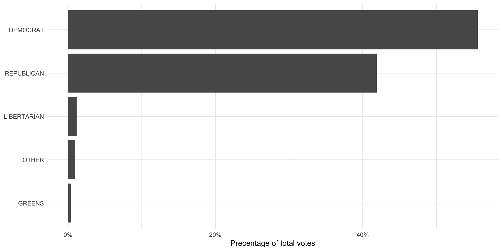
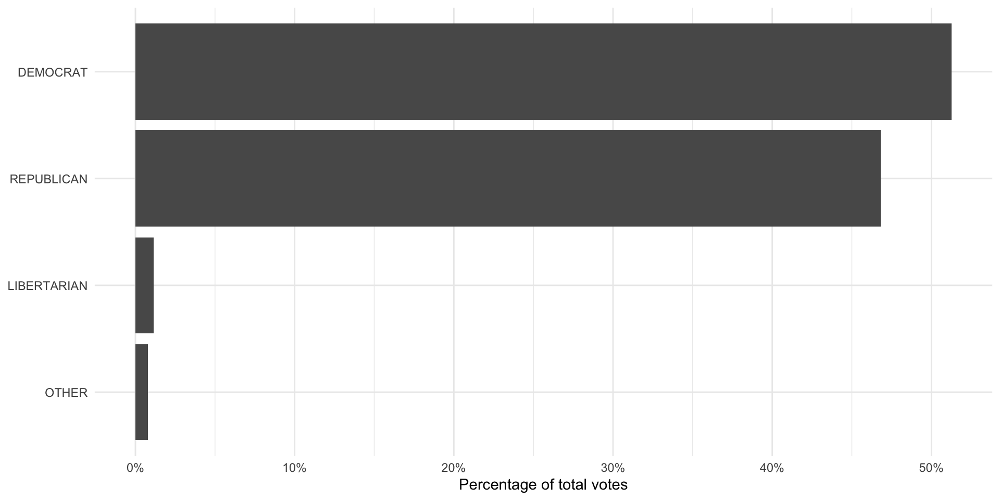
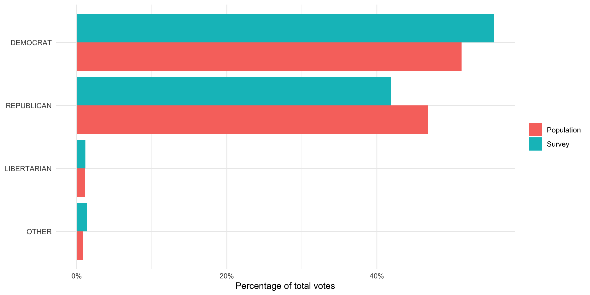

install.packages(c("tidyverse", "wbstats", "scales", "here", "dataverse"))From Samples to the Population
A lot the data we use in political science research are incomplete. Rarely do we have data on all actors in our population of interest. We, therefore, need to work out the degree to which our sample of actors resembles what we would see in the population. This session introduces you to the tools you need to do this.
Set up
To complete this session, you need to load in the following R packages:
Install packages
To install new R packages, run the following (excluding the packages you have already installed):
Introduction
Entire populations are very difficult to collect data on. Even the census (which aims to account for every citizen living within a country) misses people. Happily, we do not need to learn information about the whole population to discover general trends within it. Instead, we can use good surveys of the population.
What do I mean by “good”? The sample of your population surveyed must be representative of that population. This session focuses on defining what we mean by that.
Representative samples
Surveys are conducted on a subset of a our population of interest. This is because it is often unfeasible (or impossible) to ask these questions of our population.
To be able to infer from our sample information about our population, we need to ensure the sample is representative of that population. In other words, we need to try our best to make sure the sample looks very similar to our population.
Remember back to the last session on experiments. In an ideal world, we would be able to create two parallel worlds (one with the treatment, one held as our control). These two worlds would be identical to each other prior to treatment. This allows us to confidently state that any differences in our outcome of interest were caused by the treatment. It was, after all, the only thing differentiating those two worlds.
Sadly, however, we have no time machine and cannot produce two parallel worlds. Instead, we needed to create two groups that are as identical to one another as possible prior to treatment. If they are (almost) identical, differences between their group-wide outcomes can be attributed to the treatment.
One very good way of getting two (almost) identical groups is to assign individuals to those groups randomly.
Tip
For more on why randomization works, please head back to Randomization in Causes and Effects.
Similarly, we can use randomization to pull a sample from our population that looks, on average, identical to that population. Drawing randomly from our population increases our chances of ending up with a sample that reflects that population.
Random sampling
To sample randomly from your population, all individuals in the population need to have an equal chance of being selected for the sample. If this holds, you have a pure random sample.
However, this is really hard to do! For example, think about how likely you are to answer a call from an unknown number. Pollsters rely on people picking up their calls. Imagine you do answer: how likely are you to sit through an interview with a pollster?
There are groups of people in the US voting population who are more likely to pick up a call from an unknown number. For example, people with land line phones are much more likely to answer that call (they cannot see it is from an unknown number). Similarly, there are groups of people who are more likely to sit through an interview with a pollster. For example, retired people who have the time to spare during their day. These people are systematically different from the population as a whole. People with land land phones tend to be older, on average, than the general population. Similarly, retired people tend to be older than the general population.
This is important because older people tend to be more conservative than the general population as well. Your survey (which will include a disproportionately large group of older people) is likely to overstate how conservative the population as a whole is.
The effects of an unrepresentative sample
Let’s step through this with some actual data. Consider trying to answer the question: what was the average GDP earned by countries globally in 2022?
To demonstrate the effects of a biased sample, we are going to download all available GDP values for 2022 using the World Bank’s application programming interface (API). We are going to use the wb_data() function from the wbstats R package to do this. I am going to assign the resulting data set to an object called gdp_df.
gdp_df <- wb_data("NY.GDP.MKTP.CD", return_wide = F, start_date = 2022, end_date = 2022) |>
# Select only the relevant data points
select(iso3c:value)
gdp_df# A tibble: 217 × 4
iso3c country date value
<chr> <chr> <dbl> <dbl>
1 AFG Afghanistan 2022 14497243872.
2 ALB Albania 2022 19017242586.
3 DZA Algeria 2022 225638456572.
4 ASM American Samoa 2022 871000000
5 AND Andorra 2022 3380612573.
6 AGO Angola 2022 104399746853.
7 ATG Antigua and Barbuda 2022 1867733333.
8 ARG Argentina 2022 632790070063.
9 ARM Armenia 2022 19513506553.
10 ABW Aruba 2022 3279343544.
# ℹ 207 more rows
Tip
Run ?wb_data in your console to see what arguments the function takes.
We are going to treat this data set as complete. In other words, we will assume that this data set includes the actual GDP values for all countries globally in 2022. This is cheeky for many reasons. Most obviously, we are missing a whole bunch of data points. Let’s identify those:
# A tibble: 11 × 4
iso3c country date value
<chr> <chr> <dbl> <dbl>
1 VGB British Virgin Islands 2022 NA
2 CUB Cuba 2022 NA
3 ERI Eritrea 2022 NA
4 GIB Gibraltar 2022 NA
5 GRL Greenland 2022 NA
6 IMN Isle of Man 2022 NA
7 PRK Korea, Dem. People's Rep. 2022 NA
8 SSD South Sudan 2022 NA
9 MAF St. Martin (French part) 2022 NA
10 VEN Venezuela, RB 2022 NA
11 YEM Yemen, Rep. 2022 NA
Spoiler alert
Can you identify anything these missing countries have in common?
Tip
The is.na() function is a logical function (returns either TRUE or FALSE) that asks whether a value is NA, or missing. For example:
When supplied to the filter() function, it filters out all the values that are not NA (and are marked as FALSE by the is.na() function).
To exclude missing values, you can negate is.na():
# A tibble: 206 × 4
iso3c country date value
<chr> <chr> <dbl> <dbl>
1 AFG Afghanistan 2022 14497243872.
2 ALB Albania 2022 19017242586.
3 DZA Algeria 2022 225638456572.
4 ASM American Samoa 2022 871000000
5 AND Andorra 2022 3380612573.
6 AGO Angola 2022 104399746853.
7 ATG Antigua and Barbuda 2022 1867733333.
8 ARG Argentina 2022 632790070063.
9 ARM Armenia 2022 19513506553.
10 ABW Aruba 2022 3279343544.
# ℹ 196 more rowsAlternatively, you can use the drop_na() function from the tidyr package:
drop_na(gdp_df, value)# A tibble: 206 × 4
iso3c country date value
<chr> <chr> <dbl> <dbl>
1 AFG Afghanistan 2022 14497243872.
2 ALB Albania 2022 19017242586.
3 DZA Algeria 2022 225638456572.
4 ASM American Samoa 2022 871000000
5 AND Andorra 2022 3380612573.
6 AGO Angola 2022 104399746853.
7 ATG Antigua and Barbuda 2022 1867733333.
8 ARG Argentina 2022 632790070063.
9 ARM Armenia 2022 19513506553.
10 ABW Aruba 2022 3279343544.
# ℹ 196 more rowsNonetheless, let’s pretend gdp_df includes the actual GDP values for every country in 2022. I am, therefore, going to update the gdp_df object to exclude those missing values:
gdp_df <- drop_na(gdp_df, value)Now, imagine I - the researcher who wants to work out the average GDP earned by countries globally in 2022 - do not have access to these data. I need to go out and collect them myself. To do this, I intend to send a request for information to every country’s Department of Statistics, asking them for their country’s GDP in 2022. Annoyingly, however, I can only find contact details for some departments. Specifically, I can only find details for departments with very flashy websites that provide a lot of detail on how to contact teams of people whose whole job is to answer such requests for information.
Let’s update the gdp_df data set to include which countries I found contact details for. We are going to use some simulation here, which I will explain below.
# Find the GDP value the marks the lowest 25 percent of all GDP values in 2022
first_quartile_gdp <- quantile(gdp_df$value, na.rm = T)[[2]]
gdp_df <- gdp_df |>
# Create a variable that simulates my finding the contact details for countries with flashy
# websites (i.e. rich countries)
rowwise() |>
mutate(contact_details_found = if_else(value < first_quartile_gdp,
rbinom(1, 1, 0.10),
rbinom(1, 1, 0.75))) |>
ungroup()
Note
I am doing a fair bit mechanically here that could distract from my broader point about biased sampling. If, starting to read this note, you find yourself getting a bit lost, please just move on. We will come back to these concepts later.
Jumping ahead to the end, richer countries are more likely than poorer ones to have well-funded, large departments of statistics. To simulate this, I first need a definition of rich countries. I took the 25th percentile as my cut off point. The 25th percentile is the value below which 25 percent of all of the values in a series (ordered from smallest to largest) sit. So, the 25th percentile of my 2022 GDP values is the GDP value below which 25 percent of all other GDP values sit.
Richer countries are more likely to have departments with accessible teams of people able to field my request for information. This does not mean that they definitely do, nor does it mean no poorer countries do. To account for this, I determine randomly whether a country has contact details based on its GDP value. For poorer countries (those in the lowest 25 percent of all countries), I give them a 10 percent chance I find their contact details. For richer countries (those in the highest 75 percent of all countries), I give them a 75 percent chance I find their contact details. I use the rbinom() function to do this. We will talk about this probability distribution function later in the course.
I have now simulated data that reflects the constraints I would face as a researcher trying to answer my question.
Undeterred, I send out my requests to those departments I have contact details for. I receive some responses:
gdp_responses_df <- gdp_df |>
# Only sample from the countries I contacted
filter(contact_details_found == 1) |>
# Simulate the uneven likelihood I receive responses back (based on wealth)
mutate(response_received = if_else(value < first_quartile_gdp,
rbinom(1, 1, 0.5),
rbinom(1, 1, 0.8))) |>
filter(response_received == 1) |>
select(iso3c:value)
gdp_responses_df# A tibble: 116 × 4
iso3c country date value
<chr> <chr> <dbl> <dbl>
1 AFG Afghanistan 2022 1.45e10
2 ALB Albania 2022 1.90e10
3 DZA Algeria 2022 2.26e11
4 AGO Angola 2022 1.04e11
5 ARM Armenia 2022 1.95e10
6 AUS Australia 2022 1.69e12
7 AUT Austria 2022 4.72e11
8 BHR Bahrain 2022 4.67e10
9 BGD Bangladesh 2022 4.60e11
10 BEL Belgium 2022 5.93e11
# ℹ 106 more rowsNow, if I use this sample to learn something about the average GDP in 2022 for all countries globally, I am going to be wrong.
Question
Can you guess which way I will be wrong? Will I overstate or understate the global average GDP?
Here is the average GDP among my sample:
Tip
The scales package includes handy functions for formatting numbers. I have used its dollar() function to format the average GDP nicely.
And here is the average GDP among the population:
I am overstating the average by a lot! Why? Well, countries that have departments of statistics that are so well funded they can splash out for a fancy website and have a team of people dedicated to fielding requests for information from random academics tend to be wealthy. Poorer countries are less able to spare the funds required to meet my request. I am, therefore, less likely to have found a way to contact them and, even if I did, I am less likely to have received a response from them.
This is an example of sampling bias: my sample is systematically different from my population in ways important to my analysis. Wealth is what I am trying to measure, and wealth is influencing who gets into my sample and who does not. Because I do not have a representative sample, I cannot infer from that sample anything about my population.
Large(ish) numbers
It is not sufficient to have a pure random sample of your population. You also need a sufficiently large sample. To illustrate, consider drawing just one person from your population. Even if you did so entirely randomly, it is unlikely they will reflect the diversity (or even the average view) of the population.
Let’s return to our attempt to find the average GDP earned by countries globally in 2022 to illustrate this. I am going to select completely randomly five countries from the (cheeky) population using dplyr’s sample_n() function:
gdp_5_df <- sample_n(gdp_df, size = 5)
gdp_5_df# A tibble: 5 × 5
iso3c country date value contact_details_found
<chr> <chr> <dbl> <dbl> <int>
1 TTO Trinidad and Tobago 2022 3.01e10 1
2 IDN Indonesia 2022 1.32e12 1
3 XKX Kosovo 2022 9.35e 9 1
4 MDV Maldives 2022 6.18e 9 0
5 MCO Monaco 2022 8.80e 9 1The average GDP among this very small but pure random sample is $274,692,433,009, which is $212,996,142,547 dollars away from the population average.
We can do this again to see that it wasn’t just a fluke:
gdp_5_df <- sample_n(gdp_df, size = 5)
gdp_5_df# A tibble: 5 × 5
iso3c country date value contact_details_found
<chr> <chr> <dbl> <dbl> <int>
1 KIR Kiribati 2022 270841698. 0
2 CUW Curacao 2022 3075180835. 0
3 LCA St. Lucia 2022 2342703704. 1
4 CIV Cote d'Ivoire 2022 70173140101. 1
5 ASM American Samoa 2022 871000000 0The average GDP among this small pure random sample is $15,346,573,268, a $472,342,002,288 dollar difference from the population average.
If we increase our sample size, we get closer to the population average:
gdp_175_df <- sample_n(gdp_df, size = 175)
gdp_175_df# A tibble: 175 × 5
iso3c country date value contact_details_found
<chr> <chr> <dbl> <dbl> <int>
1 TTO Trinidad and Tobago 2022 3.01e10 1
2 OMN Oman 2022 1.12e11 0
3 KNA St. Kitts and Nevis 2022 9.81e 8 0
4 PAN Panama 2022 7.63e10 0
5 COL Colombia 2022 3.45e11 1
6 VCT St. Vincent and the Grenadines 2022 9.66e 8 0
7 TZA Tanzania 2022 7.58e10 0
8 ITA Italy 2022 2.10e12 1
9 MHL Marshall Islands 2022 2.53e 8 0
10 GRD Grenada 2022 1.22e 9 0
# ℹ 165 more rowsThe average GDP among this small pure random sample is $546,787,923,128, a mere $59,099,347,572 dollar difference from the population average.
The larger your sample size, the closer you will get to the population average. You increase the likelihood you capture the diversity of the population as your sample size increases.
US Presidential Elections
US Presidential elections involve thousands of surveys of the US population. Pollsters ask a small subset of that population questions about the election (including which candidate they intend to vote for). They hope to learn from the answers provided by that sample the views of the broader population.
We will look at surveys run in the 2020 US Presidential Election. We will learn about overall support for the two candidates (Joe Biden and Donald Trump), and how this support shifted across different demographics. We will then compare that survey to the end result to learn how accurately the survey reflected the population’s views.
A survey of votes cast
We are going to look at the American National Election Studies pre-election survey. The ANES conducts surveys on voting, public opinion, and political participation. You can learn more about them from their website.
To download the data, you will need to head over to the ANES website, download the relevant file, and save it in your RProject. The following video demonstrates how to do this.
Once you have collected the data, you can read it in using the readr package’s read_csv() function. It takes the file’s path as its first argument.
# A tibble: 8,280 × 1,771
version V200001 V160001_orig V200002 V200003 V200004 V200005 V200006 V200007
<chr> <dbl> <dbl> <dbl> <dbl> <dbl> <dbl> <dbl> <dbl>
1 ANES202… 200015 401318 3 2 3 0 -2 -2
2 ANES202… 200022 300261 3 2 3 0 4 -1
3 ANES202… 200039 400181 3 2 3 0 -2 -2
4 ANES202… 200046 300171 3 2 3 0 -2 -2
5 ANES202… 200053 405145 3 2 3 1 -2 -2
6 ANES202… 200060 400374 3 2 3 0 -2 -2
7 ANES202… 200084 407013 3 2 3 0 -2 -2
8 ANES202… 200091 407174 3 2 3 0 -2 -2
9 ANES202… 200107 406264 3 2 3 0 -2 -2
10 ANES202… 200114 402782 3 2 3 1 4 -1
# ℹ 8,270 more rows
# ℹ 1,762 more variables: V200008 <dbl>, V200009 <dbl>, V200010a <dbl>,
# V200010b <dbl>, V200010c <dbl>, V200010d <dbl>, V200011a <dbl>,
# V200011b <dbl>, V200011c <dbl>, V200011d <dbl>, V200012a <dbl>,
# V200012b <dbl>, V200012c <dbl>, V200012d <dbl>, V200013a <dbl>,
# V200013b <dbl>, V200013c <dbl>, V200013d <dbl>, V200014a <dbl>,
# V200014b <dbl>, V200014c <dbl>, V200014d <dbl>, V200015a <dbl>, …
Tip
The here R package makes saving data in a robust way very easy. Using here::here(), you can automatically update file paths to reflect the computer you are currently using. To demonstrate, run the following code:
here::here()[1] "/Users/harrietgoers/Documents/GVPT399F"Your output will be different to mine. here::here() locates the top level of the file directory in which you are located. This is helpful when you share your code with others (or switch to a new computer). Hard coded file paths will cause annoying errors.
I like to save my data in a folder called data. You can use a structure you find works for you.
Each row of this data set represents a single respondent. Therefore, we can quickly note that in 2020, the ANES surveyed 8,280 people.
The ANES asks a lot of questions of its respondents. Full details of these questions can be found in their survey questionnaire document. We are interested in learning whether the survey respondents reflect the behavior of all US voters in the 2020 US Presidential election. To answer this question, we are going to focus on their response to the question: which Presidential candidate did you vote for?
This question was only asked of respondents who had already told the interviewer that they voted for a US president. Not all respondents voted, so we need to remove those who did not from our data set.
We will then match these data to the total vote count each candidate won in the election to see if they are similar.
Let’s start by transforming our data set into one that is more suitable for this analysis:
anes_df <- anes_raw |>
select(respondent_id = V200001,
voted_for_pres = V202072,
pres_vote = V202073)
anes_df# A tibble: 8,280 × 3
respondent_id voted_for_pres pres_vote
<dbl> <dbl> <dbl>
1 200015 -1 -1
2 200022 1 3
3 200039 1 1
4 200046 1 1
5 200053 1 2
6 200060 1 1
7 200084 1 2
8 200091 -1 -1
9 200107 -1 -1
10 200114 1 1
# ℹ 8,270 more rowsIndividuals’ responses are coded as numbers, which are easily interpreted by the computer, but not by us humans. Let’s recode the responses so we know what they are. They are categorical variables (which R refers to as factors). Currently, they are coded as numbers (<dbl>). To convert them to factors, we need to use factor() within mutate():
anes_df <- anes_df |>
mutate(voted_for_pres = factor(voted_for_pres, levels = 1:2,
labels = c("Yes, voted for President",
"No, didn’t vote for President")),
pres_vote = factor(pres_vote, levels = 1:5,
labels = c("DEMOCRAT",
"REPUBLICAN",
"LIBERTARIAN",
"GREENS",
"OTHER")))
anes_df# A tibble: 8,280 × 3
respondent_id voted_for_pres pres_vote
<dbl> <fct> <fct>
1 200015 <NA> <NA>
2 200022 Yes, voted for President LIBERTARIAN
3 200039 Yes, voted for President DEMOCRAT
4 200046 Yes, voted for President DEMOCRAT
5 200053 Yes, voted for President REPUBLICAN
6 200060 Yes, voted for President DEMOCRAT
7 200084 Yes, voted for President REPUBLICAN
8 200091 <NA> <NA>
9 200107 <NA> <NA>
10 200114 Yes, voted for President DEMOCRAT
# ℹ 8,270 more rows
Note
I got the response labels from the survey questionnaire linked above.
Tip
factor() takes as its first argument the name of the column you would like to convert to a factor. You then specify which numbers you need to code as your values using the levels argument. Finally, you supply the more human-friendly name of those values in the labels argument.
I now have a much cleaner version of my data set. Next, we need to exclude those respondents who did not vote for any Presidential candidate or who did not respond to the interviewer’s question about which candidate they voted for:
pres_voted_df <- anes_df |>
filter(voted_for_pres == "Yes, voted for President") |>
drop_na(pres_vote)
pres_voted_df# A tibble: 5,877 × 3
respondent_id voted_for_pres pres_vote
<dbl> <fct> <fct>
1 200022 Yes, voted for President LIBERTARIAN
2 200039 Yes, voted for President DEMOCRAT
3 200046 Yes, voted for President DEMOCRAT
4 200053 Yes, voted for President REPUBLICAN
5 200060 Yes, voted for President DEMOCRAT
6 200084 Yes, voted for President REPUBLICAN
7 200114 Yes, voted for President DEMOCRAT
8 200121 Yes, voted for President DEMOCRAT
9 200138 Yes, voted for President DEMOCRAT
10 200152 Yes, voted for President REPUBLICAN
# ℹ 5,867 more rowsWe now have data on 5,877 individuals who voted for a Presidential candidate and provided their vote to the interviewer. Let’s take a look at the total number of votes each candidate received:
pres_voted_df |>
count(pres_vote) |>
ggplot(aes(x = n, y = reorder(pres_vote, n))) +
geom_col() +
theme_minimal() +
labs(x = "Votes received",
y = NULL)Joe Biden (the Democratic candidate) received the most votes among the ANES survey respondents. Let’s represent this as vote proportions so we can more easily compare it to the votes received by each candidate nationally:
pres_voted_df |>
count(pres_vote) |>
mutate(prop = n / sum(n)) |>
ggplot(aes(x = prop, y = reorder(pres_vote, prop))) +
geom_col() +
theme_minimal() +
labs(x = "Precentage of total votes",
y = NULL) +
scale_x_continuous(labels = percent)
The population of votes cast
So, were they right? To answer this question, we need to get data on the total number of votes each Presidential candidate received in 2020. The MIT Election Data + Science Lab provides these returns to the public. To access their data, we will use the Harvard Dataverse API. We will access it using the R package dataverse.
Note
The dataverse package accesses the Harvard Dataverse Application Programming Interface (API) in the background. To learn more about how to access this API directly, check out the Harvard Dataverse documentation.
We will be accessing the U.S. President 1976–2020 data set. To do this, we need three pieces of information:
The name of the file we want to download
The data set’s DOI
The data set’s format
We can get all of this information from the data set’s page on the Harvard Dataverse website.
pres_results_df <- get_dataframe_by_name(
filename = "1976-2020-president.tab",
dataset = "10.7910/DVN/42MVDX",
server = "dataverse.harvard.edu",
original = T,
.f = readr::read_csv
)This code programmatically pulls the most up-to-date data set from the API. Once the MIT Election Lab publishes the 2024 Presidential Election data, you will only need to update the file name to be able to access it.
We are interested in looking at the 2020 Presidential Election, so we will transform our data to exclude all others. Also, these data are at the state-level. We need to aggregate them up to the national level.
We do both of these things in the following code chunk:
pres_results_2020_df <- pres_results_df |>
filter(year == 2020) |>
group_by(party_simplified) |>
summarise(candidatevotes = sum(candidatevotes)) |>
ungroup()
pres_results_2020_df# A tibble: 4 × 2
party_simplified candidatevotes
<chr> <dbl>
1 DEMOCRAT 81268908
2 LIBERTARIAN 1797355
3 OTHER 1246094
4 REPUBLICAN 74216146Finally, we will calculate the proportion of votes each candidate received to make it comparable to the survey results:
pres_results_national_df <- pres_results_2020_df |>
mutate(prop_pop = candidatevotes / sum(candidatevotes))
ggplot(pres_results_national_df, aes(x = prop_pop, y = reorder(party_simplified, prop_pop))) +
geom_col() +
theme_minimal() +
labs(x = "Percentage of total votes",
y = NULL) +
scale_x_continuous(labels = percent)
The MIT Election Lab folds the Greens party into the “other” category, whereas the ANES separates them out. To make these comparable, we need to fold the Greens votes into the “other” category. We can do this using the forcats package’s (loaded in with the tidyverse) fct_recode() function:
Now we can compare these two:
pres_results_national_df |>
left_join(anes_national_results, by = join_by(party_simplified)) |>
pivot_longer(prop_pop:prop_survey) |>
mutate(name = case_when(name == "prop_pop" ~ "Population",
name == "prop_survey" ~ "Survey")) |>
ggplot(aes(x = value, y = reorder(party_simplified, value), fill = name)) +
geom_col(position = "dodge") +
theme_minimal() +
labs(x = "Percentage of total votes",
y = NULL,
fill = NULL) +
scale_x_continuous(labels = percent)
It looks like the ANES did a fairly good job of capturing the US voting population’s behavior. The proportion of survey respondents who said they voted for each candidate (represented by the blue bar) is roughly equal to the proportion of votes won by each candidate (represented by the pink bar).
One interesting thing to note is that the survey did overstate support for Joe Biden and understated support for Donald Trump. We might see this despite having a representative sample. For example, people - when asked who they voted for - may be inclined to say they voted for the winner (regardless of who that winner was). Also, individuals may be hesitant to tell a pollster that they voted for Donald Trump given how divisive he and his campaign were.
It is; however, very likely that the ANES did not reach a representative sample of the US voting population. As we discussed above: this is very difficult (if not impossible) to do. ANES runs very good surveys precisely because they acknowledge and, to the best of their ability, account for this. Generally, surveys will compare the demographics of their respondents to those of the voting population (or population more generally). If they find that some individuals are under-represented in their sample (for example, young black women make up a smaller proportion of their sample than they make up in the population), they will make the responses of individuals who fit those demographics count for more than one response in their calculations. Similarly, if they find a demographic is over-represented in their sample, they will make their responses count for less than one response in their calculations. This practice is called weighting and it is standard across all major and respected surveys.